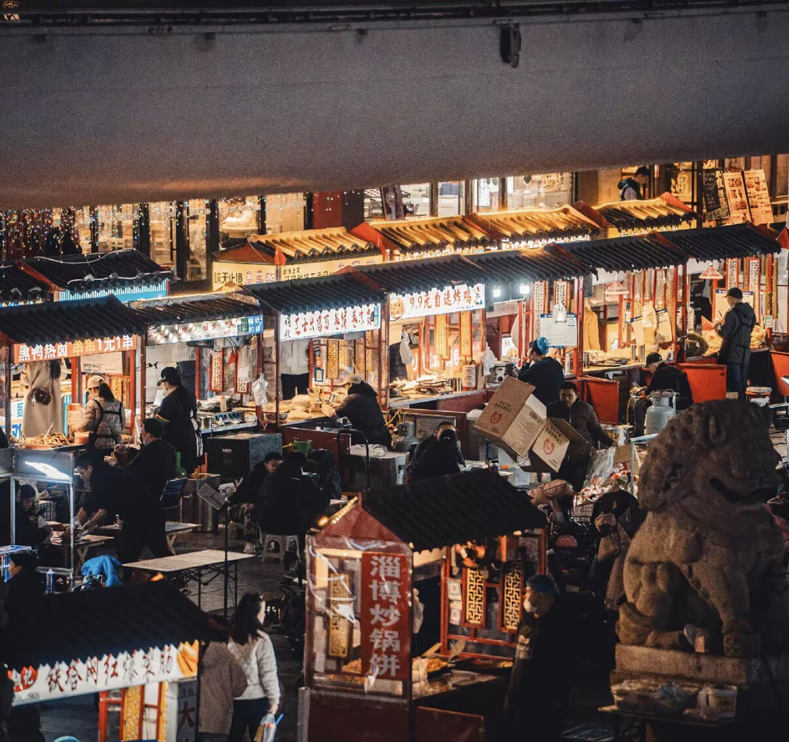
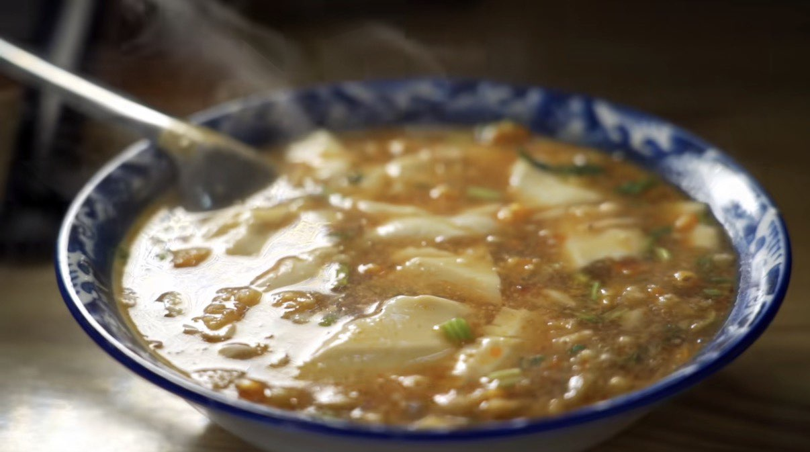
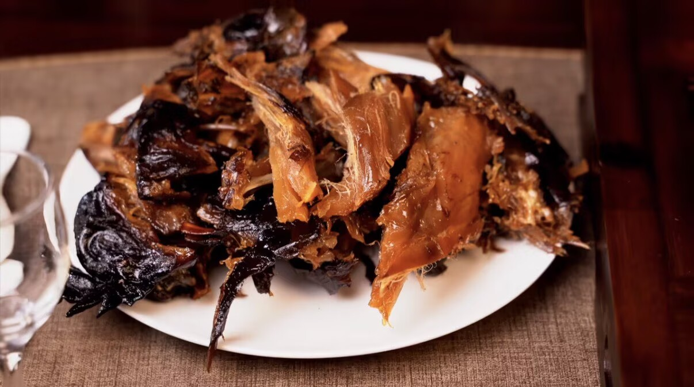
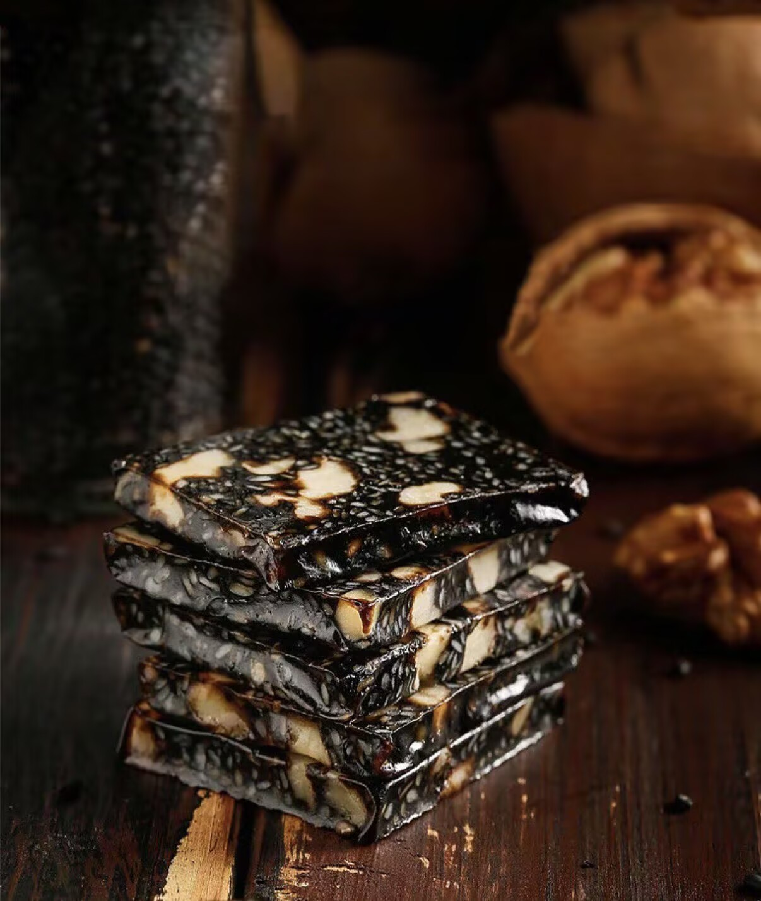

Food in Liaocheng is closely connected to everyday life. It reflects warmth, simplicity, and local tradition.
From breakfast snacks to regional specialties, these foods show how culture is experienced through daily habits.

Breakfast is simple, practical, and an essential part of daily rhythm in Liaocheng.
Guada is crispy on the outside and soft inside, making it a satisfying morning food.
It reflects a practical lifestyle—quick, affordable, and filling.

A smooth tofu dish served warm and lightly seasoned.
It represents comfort and a gentle start to the day.

Known for its rich aroma and tender texture.
A popular takeaway and traditional dish.

A traditional product with cultural significance.
Represents long-standing local heritage.